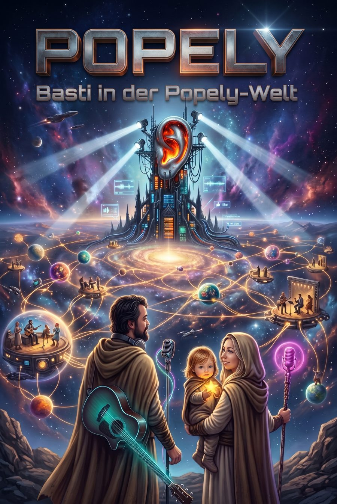
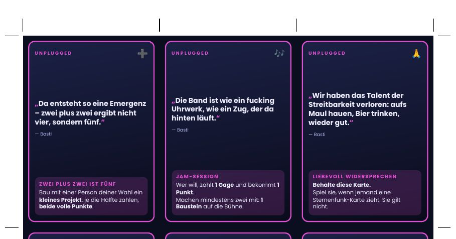
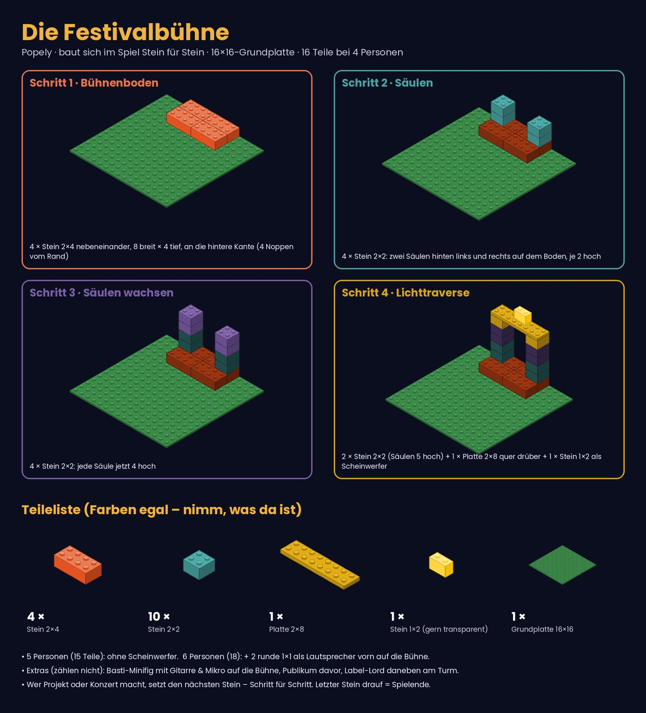

Worum geht's?
Popely ist das Gegenteil von Monopoly. Bei Monopoly gewinnt, wer alles besitzt. Bei Popely gewinnt, wer am meisten zurückgibt. Wer Plektren hortet, bekommt einen Ego-Verstärker, und der kostet am Ende Punkte. Wer Projekte für alle baut und Konzerte gibt, bekommt Punkte.
Diese Ausgabe spielt in Bastis Welt. Es geht um das Dilemma, das er in seinem Podcast immer wieder bespricht: Als Musiker verkauft man sich oder bleibt echt und ist pleite. Basti regiert die Welt nicht, er ist ein Teil von ihr. Gezahlt wird mit Plektren, dünn, mittel und dick.
Alle zusammen bauen dabei eine kleine Lego-Festivalbühne in der Mitte. Ist sie fertig, ist das Spiel aus. Ist sie nach 90 Minuten nicht fertig, gewinnt der Turm, und keiner von euch.
Deine Spuren im Spiel

Die Karten: über 200 Sätze aus dem Podcast
Wir haben 22 Folgen von Ego Unplugged durchgelesen und fast 600 Zitate gesammelt, von Basti und von seinen Gästen. Michael hat aussortiert. Übrig sind 240 Karten: Fast jeder Gast ist dabei, und jede Karte hat einen anderen Satz. Die Wirkung im Spiel wiederholt sich, das Zitat ist jedes Mal eine Überraschung.

Zwei Stapel: Sternenfunk (die Welt, Versuchungen, Zufall) und Unplugged (nach innen schauen, geben, gemeinsam).
Halb echt, halb digital
Das Brett, die Figuren, die Plektren und die Lego-Bühne sind echt, zum Anfassen. Die zwei Kartenstapel liegen auf einem Handy in der Mitte: antippen, Karte erscheint groß, vorlesen, weg damit. Auf demselben Handy läuft der 90-Minuten-Timer.
Warum? Wenn Basti neue Folgen aufnimmt, kommen einfach neue Karten dazu, ohne neu zu drucken. Und es spart Papier. Viele moderne Brettspiele machen das so, mit einer Begleit-App neben dem echten Brett.
Tipp: Öffne den Link auf dem Handy. Alles wird auf dem Handy gespeichert. Wenn man zwischendurch WhatsApp öffnet oder das Handy sperrt, geht nichts verloren.
So spielt man
- Aufbau: Brett auslegen, jede Person nimmt eine Lego-Figur und Startgeld in Plektren. Handy mit dem Kartenstapel in die Mitte, Timer starten.
- Würfeln und ziehen. Auf Sternenfunk- oder Unplugged-Feldern tippt man auf den Stapel und liest die Karte vor.
- Felder pachten: Wer auf deinem Feld landet, zahlt Miete, oder du lädst ihn zur Offenen Bühne ein und bekommst dafür einen Punkt.
- Projekte bauen und Konzerte geben: Gemeinschaftsgarten, Musikschule, Festival … Jedes Projekt und jedes Konzert setzt einen Lego-Stein auf die Bühne.
- Ende: Bühne fertig, Punkte zählen, minus Ego-Verstärker. Dann spielt Basti das Abschlusslied.

Die Festivalbühne: 16 Lego-Teile, wächst Schritt für Schritt im Spiel.
Was man zum Spielen braucht
🖨️ Gedruckt
- Spielbrett (A1)
- Pacht- und Projektkarten
- Ego-Verstärker-Marker
- Regeln & Preistafel
🎸 Mitgebracht
- Plektren als Geld
- 2 Würfel
- Lego: Grundplatte, Steine, Figuren
📱 Auf dem Handy
- Kartenstapel
- 90-Minuten-Timer
- Akku voll 🙂